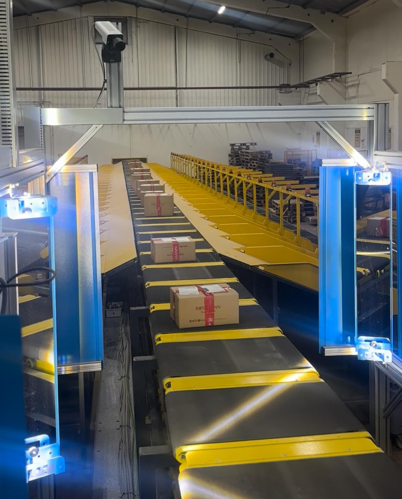
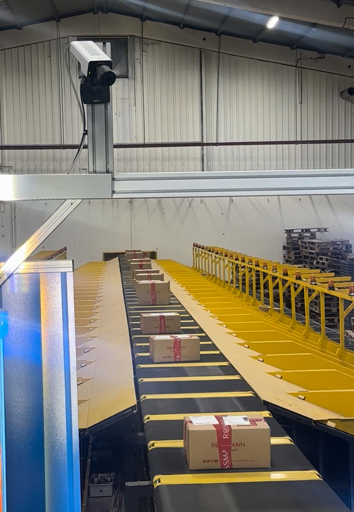
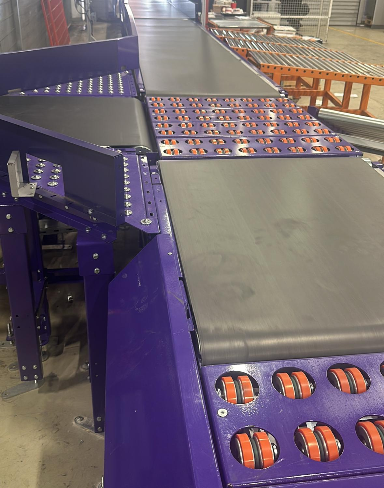
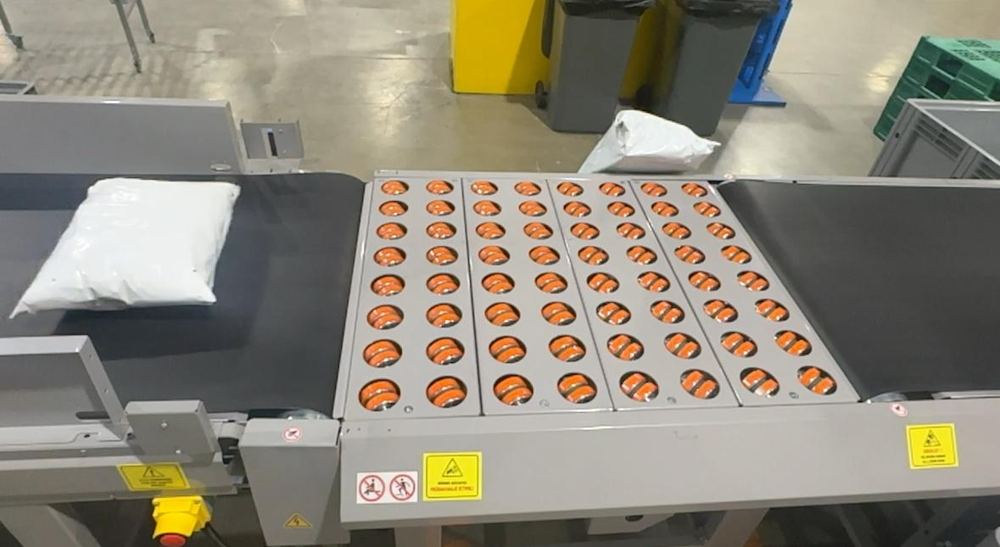
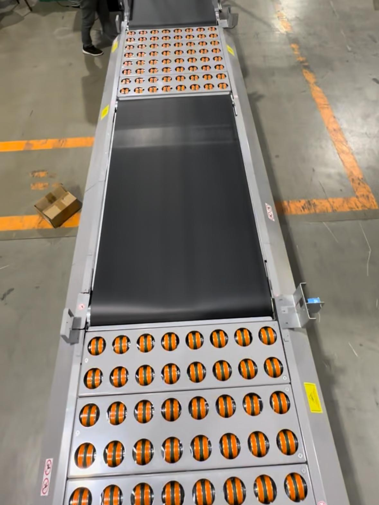
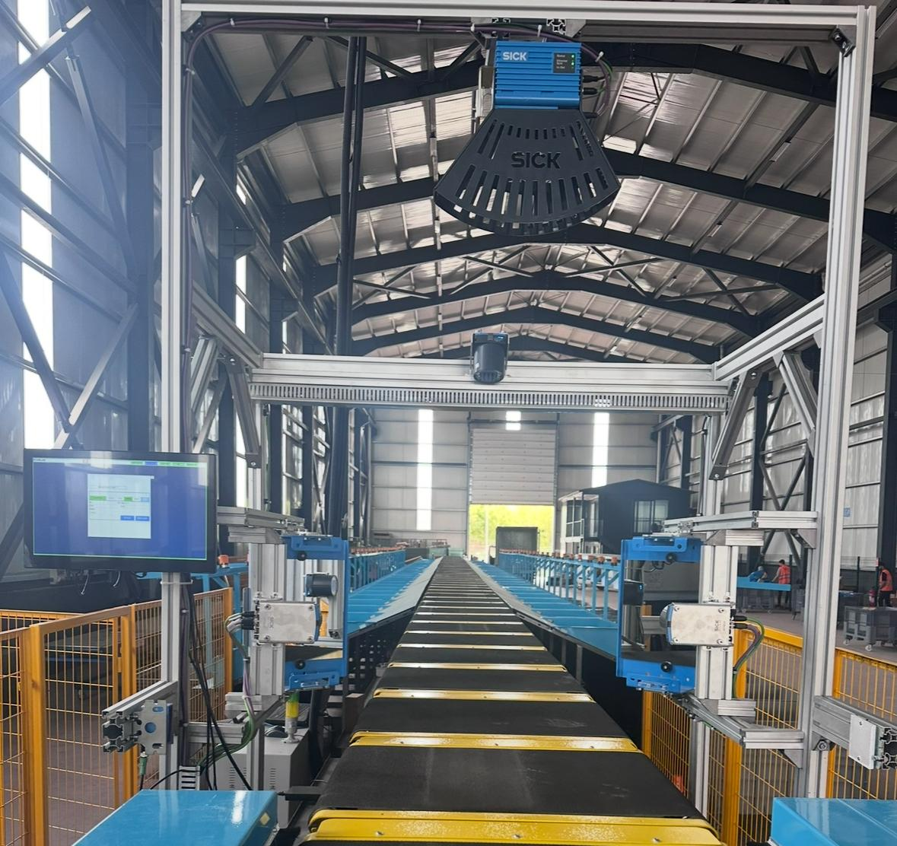
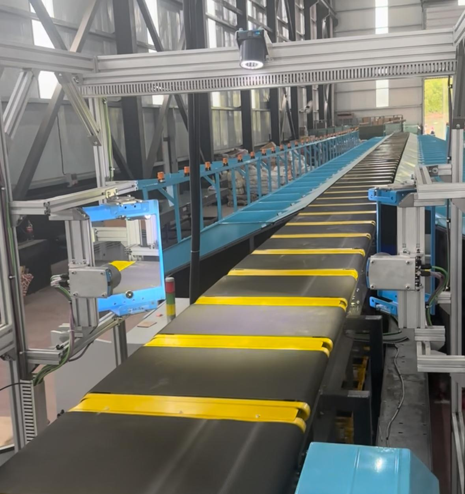
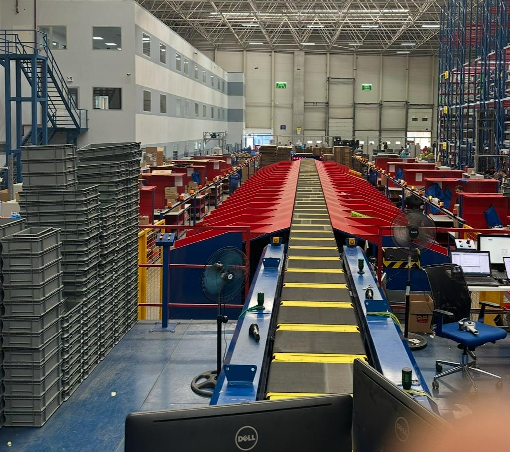
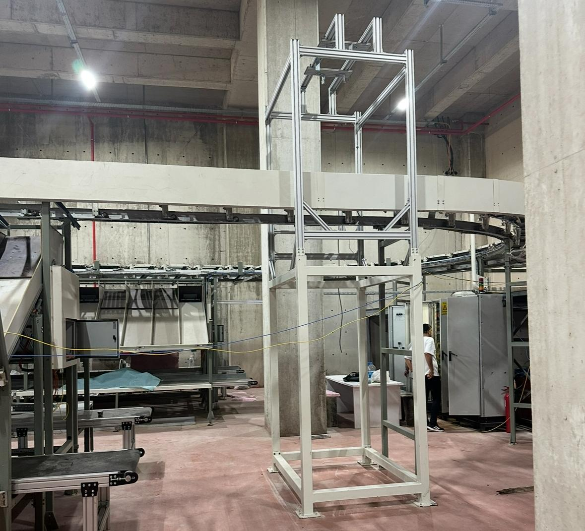
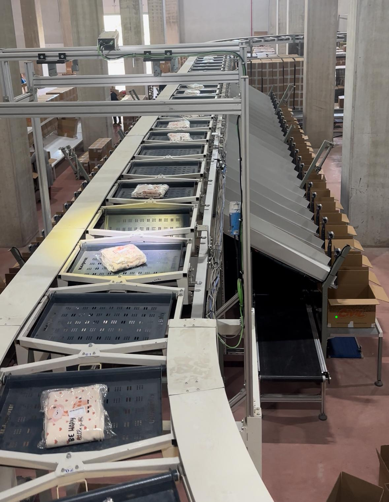

Sorter Sistemleri Galerisi
Gerçek sorter sistemlerimizden görseller

Ana Konveyör Hattı
Yüksek hızda paket taşıma ve sıralama

Tarayıcı İstasyonu
Barkod okuma ve paket tanıma sistemi

Divertor Mekanizması
Otomatik yönlendirme ve sıralama

Çıkış Kanalları
Hedef noktalara göre sıralanmış paketler

Kontrol Paneli
Merkezi kontrol ve izleme sistemi

Güvenlik Sistemleri
Operatör güvenliği ve sistem koruması

Bakım Erişimi
Kolay bakım ve servis erişimi

Endüstriyel Tasarım
Dayanıklı ve güvenilir yapı

Yüksek Kapasite
3000+ parça/saat işleme kapasitesi

Esnek Konfigürasyon
İhtiyaca göre özelleştirilebilir sistem

Otomatik Operasyon
7/24 kesintisiz çalışma

Verimlilik Optimizasyonu
Maksimum verimlilik ve performans

Kalite Kontrol
%99.9+ doğruluk oranı
Sistem Entegrasyonu
Mevcut sistemlerle uyumlu entegrasyon